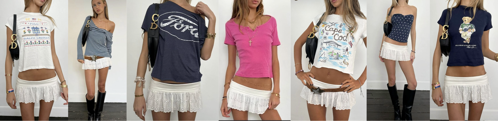

Written and curated by Isa Grznar, a fashion girly in her 20s with a passion for thrifting, sustainable fashion, and vintage aesthetics.
While style in NYC changes with the weather, one thing always remains constant and that is individuality shown through taking risks in outfits daily. In the summer, it’s all about layering light textures, accessorizing creatively, and blending timeless vintage with the current trends. I also like the color coordination and put-together aesthetic used in London and other areas of Europe, as you can see aswell.


Images via Pinterest – NYC and European style inspiration
Every great outfit starts with strong basics. Simple clothing pieces like white tanks, black tees, and everyday denim can easily act as the framework for endless creative combos to be built off of. Two highly-favorited brands currently are Skims and Levi’s, known for their quality, comfort, and versatility.

Here are the links to a couple sites I mentioned...
Thrifting is a sustainable, fun, and expressive way to curate a wardrobe. It also combats the negatives of fast fashion by keeping clothes in circulation and supporting small sellers. When shopping, keeping in mind how many ways an item can be styled should be a key factor in your decision to purchase or not.
One skirt styled multiple ways, paired with the same bag aswell
Statement belts over micro shorts or skirt waists without loops? A Summer 2025 obsession. And boots? They make everything cooler, especially when paired with boots, or a lower ballet flat/sneaker with high socks.


Micro shorts + belts = the perfect Summer 2025 moment
Sustainability and the idea of a capsule wardrobe come into play here, when one item-- like a Miu Miu crochet bag-- can accompany countless outfits. This is a way to incorporate designer pieces alongside your thrifted clothing, while going back to the idea of choosing pieces you can style many different ways.

The iconic, colorful, crochet Miu Miu bag styled across many different outfits and aesthetics
Capsule wardrobes aren't boring-- they're freeing. Think fewer pieces, more styling power, and more of a chance you'll be able to even remember what's in your closet. It’s all about pairing your favorite colors with your style aesthetic to find your signature look, using pieces that can be used cohesively with one another to create many different looks.
Check out Emma Chamberlain's podcast episode on capsule wardrobes is one of my favorites, go give it a listen!.
Each of these platforms make fashion accessible, reusable, and offer a whole new way of thrifting-- especially when it comes to designer pieces. Depop and Poshmark are best for thrifting and selling, while The RealReal is an online heaven for vintage designer pieces.
Images via Pinterest | Content inspired by personal knowledge and curated sources.
Source: Vogue, Emma Chamberlain Podcast, The RealReal, Skims, Depop